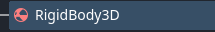
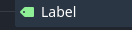

¿Que es Godot?
Los Creadores

Juan Linietsky

Ariel Manzur

Historia
Godot 1.0
Godot 2.0
Godot 3.0

Godot 4.0

¿Como funciona godot?


GDScript - Movimiento Básico
extends CharacterBody2D
func _physics_process(delta):
var speed = 200
var direction = Vector2.ZERO
if Input.is_action_pressed("ui_right"):
direction.x += 1
if Input.is_action_pressed("ui_left"):
direction.x -= 1
velocity = direction * speed
move_and_slide()
C# - Movimiento Básico
using Godot;
public partial class Player : CharacterBody2D
{
public override void _PhysicsProcess(double delta)
{
float speed = 200f;
Vector2 direction = Vector2.Zero;
if (Input.IsActionPressed("ui_right")) direction.x += 1;
if (Input.IsActionPressed("ui_left")) direction.x -= 1;
Velocity = direction * speed;
MoveAndSlide();
}
}
C++ - Movimiento Básico
#include
#include
using namespace godot;
class Player : public CharacterBody2D {
GDCLASS(Player, CharacterBody2D);
public:
void _physics_process(double delta) {
const float speed = 200.0;
Vector2 dir = Vector2();
if (Input::get_singleton()->is_action_pressed("ui_right")) dir.x += 1;
if (Input::get_singleton()->is_action_pressed("ui_left")) dir.x -= 1;
velocity = dir * speed;
move_and_slide();
}
};
¿Cuál elegir?
✨ GDScript - Rapido y Simple
⚡ C# - ideal para proyectos grandes.
🔥 C++ - Mayor rapidez
¿Como crear un proyecto?

